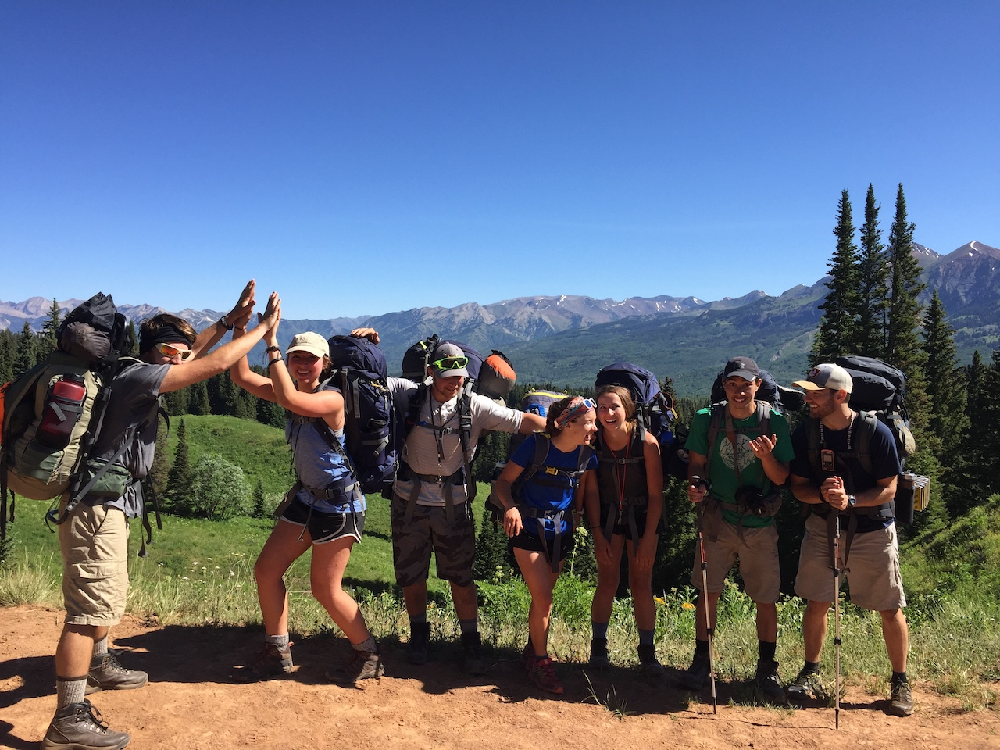

About The Pacific Trails Resort
Our Heritage
Pacific Trail Resort, founded in 1998 by Emily Johnson, is nestled
in the serene Pacific Northwest. Designed as a haven for nature
lovers, it combines luxurious accommodations with eco-friendly
practices, quickly becoming a premier destination for travelers
seeking comfort and a connection with the outdoors.

Our Mission
Our mission is to offer outstanding experiences in hiking, bird watching, and kayaking, while prioritizing guest comfort, safety, and satisfaction. We strive to create a perfect blend of adventure and relaxation, ensuring our guests enjoy a rejuvenating connection with nature.
Our founder
Emily Johnson, our founder, is an avid adventurer and
environmental advocate. Driven by her passion for nature and
vision for a sustainable retreat, she established the resort in
1998. Her dedication to sustainable practices and luxurious,
nature-integrated experiences has made the resort a beloved
destination for travelers seeking relaxation and a deep connection
with the natural world.
Our Values
We prioritize sustainability, excellence, integrity, community,
adventure, and well-being. Our dedication to sustainable practices
preserves our natural surroundings, and our commitment to
exceptional service ensures a luxurious experience for every
guest. We uphold honesty and transparency, building trust within
our community and supporting its growth. Embracing a spirit of
adventure, we provide inspiring outdoor activities and prioritize
the health and wellness of our guests, creating an environment
that fosters relaxation and rejuvenation.
Meet Our Team
Our dedicated team is the cornerstone of our exceptional guest experience. Our leadership ensures seamless operations and champions eco-friendly initiatives, while our culinary experts craft delightful dishes that highlight local flavors. Our guest services professionals provide warm and attentive hospitality, and our outdoor adventure coordinators guide thrilling and safe activities. Our wellness specialists offer rejuvenating spa experiences, and our facilities managers maintain a pristine and comfortable environment, ensuring every guest's stay is memorable.
See for yourself!
A place guaranteed to help you relax and connect with nature.
Pacific Trails Resort
12010 Pacific Trails Road
Zephyr, CA 95555
520-555-5555